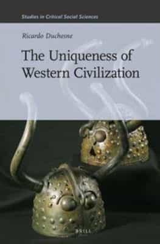

< < < Back
7 Core Principles To Help Reinvigorate Western Culture – Return Of Kings
In the last five years or so, a number of distinguished scholars, such as the famous Scottish Harvard historian Niall Ferguson and the less well-known Canadian sociologist Ricardo Duchesne, have refuted much of leftist academic discourse regarding Western civilization’s historical and present world dominance. Both of them have referred to another important figure within academia, namely Charles Murray and his work Human Accomplishment (2003), which highlights the fact that the largest share of great inventors and scientists stem from the Western world. It takes a whole new level of ahistorical deconstructionism and revisionism in any attempt to relativize these undisputable findings. This is also partly why nationalists and conservatives are winning ground in the verbal culture wars.
For example, Ferguson in his book Civilization (2011) has discerned six “killer apps” that have made the Western civilization globally hegemonic from about the 15th century onward: competition, science, property, medicine, consumption and work. Duchesne, on the other hand, focuses on the traits that underlie the long-term cumulative process. He uses modern philosophical concepts such as the Faustian spirit (Oswald Spengler) and non-dogmatism (Immanuel Kant) in order to provide arguments for his particular viewpoint. Some of these characteristics have roots stretching back thousands of year in time – even before pre-Socratic Greek civilization saw its light—while the intellectual development is a more decent achievement.
Perhaps most importantly, both of them have used significant and reliable data in order to show that the leading Western nations, culturally, economically and materially, definitely superseded China in the 16th century and forward, and that the whole idea that the widely-spread Western civilization was disseminated due to slave labor and thievery is erroneously wrong. Of course, leading Western nations such as England and the Netherlands have dominated the colonial host regions in unfair ways, but if Europeans were such incompetent people, how could they build fleets and weapons that outcompeted their opponents and enemies in the first instance?
Apart from the valuable accounts on these topics, Ferguson and Duchesne provide ideas on how a more fruitful Western civilization might be developed: thus we go from descriptive history to prescriptive reasoning about the not too distant future. I have listed seven core principles linked to a overall coherent conception of what a powerful and sustainable civilization may hinge upon. These can also serve as a focal point for counter-current contemporaries. Some of the following elements are already implemented, at least in part, while some need to be reinvigorated (in parallel with discarding decadence and other negative components).

1. Greco-Roman Culture As Its Main Source
Over the last 3000 years or so, the high cultures of the Mediterranean region and Southern Europe have formed concepts and ideas that are still being referred to in mainstream academia and among intellectual dissidents as of today.
We all can agree that Plato’s dialogues, Aristotle’s multifaceted proto-science, Zeno of Citium’s Stoicism, Plotinus’ philosophy, Cicero’s discourses and, of course, Christianity and Roman law, are all foundations of any version of Western culture worthy of its name. Those are the roots that we all are attached to, more or less, and if one cuts them completely off one is bound to be at best a rootless cosmopolitan spirit, with only hedonism as the fragment that gives pseudo-meaning to existence.
Part of the dumbing down process in the West is because Westerners in general do only know about—with palpable limitations even in that respect—democracy.

2. Free Speech And Thought
Whether one first come to think of the French encyclopedists, the First Amendment to the United States constitution, or modern science in general (that is real science, not gender studies), free speech and thought are some of the basic elements that presuppose pretty much all the other main aspects of societal life. It is also these two components, although significantly curtailed in present times, which make this website possible to exist at all, as a platform for the exchange of constructive ideas that challenge the current zeitgeist’s status quo.
Freedom has its limitations both in public and private, but it is not in line with the Western culture to be too confined in neither of these domains. We may have dogmas and value consistent ethics, but some of us hardly go through life without to seriously question at least some of them, as well as changes that do occur in our societies.
Because if we do not, the tyrants—and they will eventually come yet another time, due to how human nature is constituted—will go unnoticed for too long. Free speech and thought are something larger and deeper than the right or possibility to get attention and try to pursue individual goals.
3. Science
Niall Ferguson stresses that science and medicine are two separate “killer apps” and one can indeed do such a twofold categorization. However, as I see it science in the proper sense includes many different branches of which medical improvements make up one such chief dimension. Physics, mathematics and chemistry are other main areas, alongside a number of less essential but still relatively valuable subjects. Needless to say, military science is another crucial component in this regard.
Whether or not one yearns for vast space explorations or only—literally—earthly discoveries, science is largely what underlies the West’s success. It is not just about material and practical benefits but processes which are closely intertwined with the culture and civilization as a whole. This is the Faustian spirit in the positive and life-affirming sense.
Speaking of Faustian, science is of course also linked to sometimes riskful direct explorations of our world. This includes cooperation with other nations, cultures and civilizations. For the laymen, individual discoveries may be related to activities such as reading, hiking and traveling. Or scuba diving.
4. Competition
Economics and politics have and will continuously change over time and space (such as the degree of globalism or isolationism), but competition – between individuals, groups, states and civilizations – is one of the constants that will likely never go away. Partly because it is part of human nature, and partly due to being beneficial for our culture, and probably other cultures as well.
Competition ought to be primarily peaceful, both within and between nations and civilizations. In any case it is what makes changes occur: some are constructive, some are harmful. However, it is naive and unwise to deny the almost eternal return of competition in various forms and at many different levels of any Western society. It is competition that has made America and the West great and it might be inevitable also in the future.

5. Apollonian Arts Based On Skill And Beauty
The easy part of culture is to integrate some form of Dionysian elements, such as parties, music and recreational sex. The current Western civilization is brimming over with these things. The hard part is to build and sustain art and ways of life that are truly beautiful and based on particular skills and principles. The distinction between the Dionysian and the Apollonian may guide us here.
Besides from neoclassical arts and architecture, and perhaps also certain high-tech and futuristic manifestations, the everyday Apollonian lifestyle may include diligent work, solid ethics, family life, healthy food, and proper physical exercise. Moreover, one can immerse one’s interest in particular hobbies or talents. That is an art in itself.

6. Complementary Gender Roles
Recently I and my young and hot conservative girlfriend went to IKEA to buy a new kitchen table for my apartment. This piece of furniture was divided into two main parts, separated into two parcels. I do not own a car at the moment so there were some logistics involved, such as a bus and metro ride, on which we had to carry the stuff. I took the much larger and heavier piece, while the 100 lbs creature grabbed the smaller one.
At home I asked her to start to fix the table, in the meantime I was taking care of some other things. She is not dumb so she had almost completed the task after about 15 minutes, but then kindly asked me to take care of the screwdriver part, which she realized was not optimal for her slender-limbed physique. Perfect, complementary teamwork. This trivial example also symbolizes the masculine and feminine elements, while still showcasing significant overlaps of behavior and capacity.
As I see it, rational and pragmatic principles ought to guide the two sexes in everyday life. That includes the whole spectrum from private economics to daily tasks. The current gender roles and feminism are obviously not worthwhile, but neither is a complete return to the past or to look at non-Western cultures for inspiration. There is no need for it. In times of crisis, things will likely be turned around, but rational, pragmatic and complementary approaches are still our general guidelines.

7. Balanced Demographics
In America there are black, Asian and Hispanic minorities who all ought to be treated equally (good). However, white people of more or less mixed European descent are the foundation of any Western society, including the United States. Even if Western nations could use high-skilled Chinese in large numbers in order to increase the growth of sheer GDP size, enlightened citizens should hesitate to accept them, because the bigger picture is more important.
A balanced demographic landscape has to be sustained with European people as the distinctive majority group at about a 75% rate or in some national contexts even more. Somewhat fuzzy and overlapping categories of different population groups are even beneficial, since it undermines chauvinistic attempts to organize ideas of racial purity or superiority.
Read More: The 3 Purposes Of Women